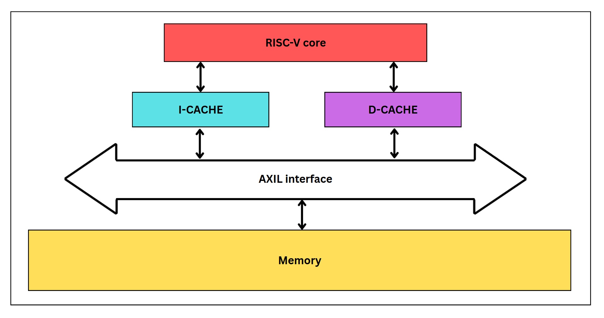

Update: I have been offered a Teaching Assistant position for CIS 5710 in Spring 2026.
This project was carried out by myself and my teammate, Khanh Tran (Eddie), as part of the CIS 5710 course during Spring 2025 at the University of Pennsylvania.

In this project, we developed a custom 32-bit RISC-V core using SystemVerilog. The technical specifications of our design are as follows:
- Architecture: 32-bit RISC-V core implemented in SystemVerilog
- Pipeline: Five-stage fully pipelined datapath featuring:
- Full bypassing (forwarding) logic
- Comprehensive stall control to handle data and control hazards
- Cache:
- Direct-mapped data cache (D$)
- Direct-mapped instruction cache (I$)
- Communication with main memory via the AXI4-Lite protocol
- Arithmetic Logic:
- Carry-Lookahead Adder (CLA) for low-latency arithmetic operations
- 8-cycle divider to reduce critical path delays and improve max clock frequency
Our implementation is functionally correct, as verified by the Dhrystone benchmark. The design was synthesized using the Yosys toolchain and deployed on a Lattice ECP5 FPGA board.
Performance metrics and resource utilization of our design are reported in the table below:
| Metric | Without caches | With caches |
|---|---|---|
| Max frequency | 30.78 MHz | 26.64 MHz |
| LUT | 30.9% | 22.8% |
| Flip-Flop | 4.1% | 3.9% |
| Multiplier Blocks | 3.2% | 2.6% |
| BRAM | 1.0% | 15.4% |
| I/O Blocks | 4.4% | 4.4% |
Note: Since the with-caches version was later developed, several logic optimizations were made by us. As a result, its LUT and flip-flop usage is slightly more efficient compared to its predecessor.
As part of the course policy, we are unable to publicly share our code. However, our full SystemVerilog implementation and other technical details can be made available upon request (typically shared in cases like recruitment processes or work unrelated to CIS 5710).